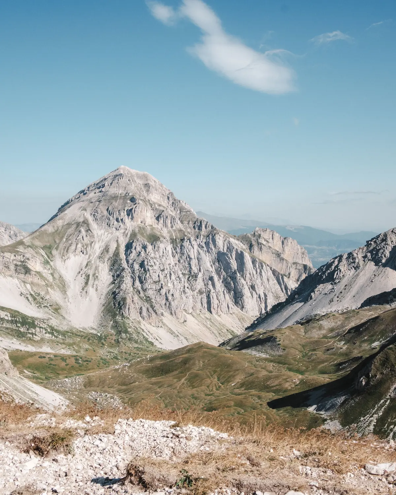

Le montagne d'Abruzzo, un passo alla volta
Camminiamo insieme quasi ogni domenica: Gran Sasso, Majella, i borghi dell'Appennino e la costa dei trabocchi. Non serve essere esperti, serve avere voglia di uscire.
Sempre accompagnati
Ogni uscita ha una guida davanti e una persona che chiude il gruppo. Il passo lo detta chi va più piano, non chi va più forte.
Anche la prima volta
Segnaliamo per ogni percorso se è facile, medio o impegnativo, così sai già prima se fa per te. Nel dubbio, scrivici.
Assicurazione inclusa
La quota da socio comprende la copertura assicurativa per tutte le attività dell'associazione.